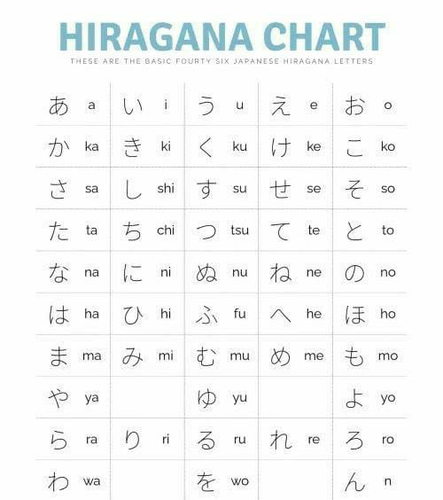
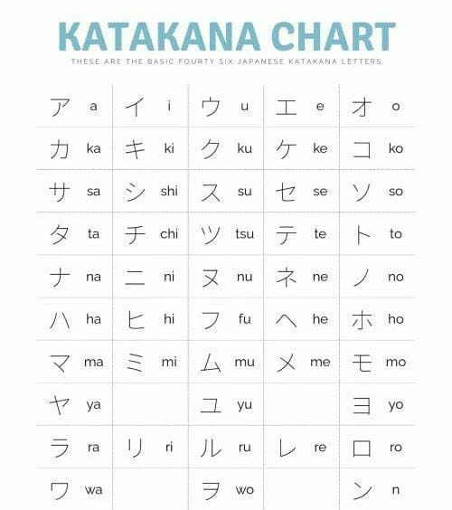

Sejarah Bahasa Jepang
Bahasa Jepang, atau Nihongo (日本語), adalah bahasa yang digunakan oleh lebih dari 125 juta orang di Jepang dan komunitas Jepang di seluruh dunia. Asal usul bahasa Jepang masih menjadi subjek perdebatan, namun ada beberapa teori yang menghubungkan bahasa Jepang dengan bahasa-bahasa lain di Asia Timur, termasuk Korea dan bahasa-bahasa Altaik.
Bahasa Jepang pertama kali muncul dalam bentuk tulisan pada abad ke-5, menggunakan karakter Kanji yang diadopsi dari Tiongkok. Seiring waktu, Jepang mengembangkan dua sistem penulisan suku kata mereka sendiri, yaitu Hiragana dan Katakana. Sejarah bahasa Jepang dapat dibagi menjadi beberapa periode:
- Jomon (10.000 SM – 300 SM): Periode prasejarah sebelum adanya catatan tertulis.
- Yayoi (300 SM – 250 M): Awal pengaruh budaya Tiongkok dan Korea.
- Nara (710 – 794): Awal penggunaan Kanji dan perkembangan Man'yogana, sistem penulisan suku kata pertama.
- Heian (794 – 1185): Pengembangan Hiragana dan Katakana.
- Kamakura dan Muromachi (1185 – 1573): Periode perkembangan sastra klasik Jepang.
- Edo (1603 – 1868): Standarisasi bahasa Jepang dan awal perkembangan bahasa Jepang modern.
- Meiji (1868 – 1912) hingga sekarang: Periode modernisasi dan pengaruh Barat.
Alfabet Jepang
Bahasa Jepang memiliki tiga sistem penulisan utama: Hiragana, Katakana, dan Kanji.
Hiragana (ひらがな)
Hiragana adalah salah satu dari dua sistem penulisan suku kata Jepang. Huruf-huruf Hiragana digunakan untuk menulis kata-kata asli Jepang yang tidak memiliki Kanji, serta sebagai okurigana (akhiran) untuk Kanji. Hiragana terdiri dari 46 karakter dasar, yang masing-masing mewakili satu suku kata.
Katakana (カタカナ)
Katakana adalah sistem penulisan suku kata yang digunakan terutama untuk kata-kata serapan dari bahasa asing, nama ilmiah, dan onomatope. Katakana juga terdiri dari 46 karakter dasar yang mewakili suku kata yang sama dengan Hiragana.
Kanji (漢字)
Kanji adalah karakter Tionghoa yang diadopsi ke dalam bahasa Jepang. Setiap karakter Kanji biasanya mewakili satu konsep atau kata, dan bisa memiliki lebih dari satu cara pembacaan. Kanji digunakan untuk menulis kata benda, kata kerja, kata sifat, dan bagian penting lainnya dari kalimat. Ada ribuan Kanji, namun sekitar 2.000 karakter Kanji digunakan dalam kehidupan sehari-hari.
Contoh Tabel Hiragana dan Katakana:
| Hiragana | Katakana | Romanisasi |
|---|---|---|
| あ | ア | a |
| い | イ | i |
| う | ウ | u |
| え | エ | e |
| お | オ | o |
| か | カ | ka |
| き | キ | ki |
| く | ク | ku |
| け | ケ | ke |
| こ | コ | ko |
Penggunaan Hiragana, Katakana, dan Kanji:
- Hiragana: Digunakan untuk kata-kata asli Jepang, partikel tata bahasa, dan akhiran kata kerja.
- Katakana: Digunakan untuk kata-kata serapan dari bahasa asing, nama-nama ilmiah, dan onomatope.
- Kanji: Digunakan untuk menulis kata benda, kata kerja, kata sifat, dan elemen penting lainnya dalam kalimat.
Tips untuk Pemula:
- Mulailah dengan Hiragana: Pelajari Hiragana terlebih dahulu, karena ini adalah dasar untuk membaca dan menulis dalam bahasa Jepang.
- Latih Menulis Karakter: Praktikkan menulis Hiragana, Katakana, dan Kanji untuk menghafal bentuk dan urutan goresan.
- Gunakan Sumber Belajar: Manfaatkan buku, aplikasi, dan video untuk membantu pembelajaran Anda.
- Bertahap dan Konsisten: Belajar bahasa Jepang membutuhkan waktu dan konsistensi. Luangkan waktu setiap hari untuk berlatih.
Hiragana (ひらがな)
Hiragana adalah salah satu dari dua sistem penulisan suku kata Jepang. Huruf-huruf Hiragana digunakan untuk menulis kata-kata asli Jepang yang tidak memiliki Kanji, serta sebagai okurigana (akhiran) untuk Kanji. Hiragana terdiri dari 46 karakter dasar, yang masing-masing mewakili satu suku kata.
Daftar Karakter Hiragana Dasar dan Tambahan
Daftar hiragana di bawah menunjukkan 46 karakter hiragana dasar beserta romajinya. 5 huruf dalam baris pertama adalah huruf vokal.
Dikombinasikan dengan vokal, baris-baris lainnya membentuk hiragana yang tersisa. Satu-satunya pengecualian adalah konsonan tunggal ん(n).
Selain itu, meskipun ditulis sebagai を(wo), pengucapannya sama dengan お(o).
Latihan Menulis Hiragana
Praktikkan menulis setiap karakter Hiragana berikut urutan goresan yang benar:
Video Pembelajaran Hiragana
Video dari WaGoMu #JapaneseClass
Katakana (カタカナ)
Katakana adalah sistem penulisan suku kata yang digunakan terutama untuk kata-kata serapan dari bahasa asing, nama ilmiah, dan onomatope. Katakana juga terdiri dari 46 karakter dasar yang mewakili suku kata yang sama dengan Hiragana.
Daftar Karakter Katakana
Latihan Menulis Katakana
Praktikkan menulis setiap karakter Katakana berikut urutan goresan yang benar:
Video Pembelajaran Katakana
Video dari WaGoMu #JapaneseClass
Kanji (漢字)
Kanji adalah karakter Tionghoa yang diadopsi ke dalam bahasa Jepang. Setiap karakter Kanji biasanya mewakili satu konsep atau kata, dan bisa memiliki lebih dari satu cara pembacaan. Kanji digunakan untuk menulis kata benda, kata kerja, kata sifat, dan bagian penting lainnya dari kalimat. Ada ribuan Kanji, namun sekitar 2.000 karakter Kanji digunakan dalam kehidupan sehari-hari.
Daftar Karakter Kanji Dasar
| Kanji | Romanisasi | Arti |
|---|---|---|
| 日 | nichi, jitsu | hari, matahari |
| 一 | ichi | satu |
| 国 | koku, kuni | negara |
| 人 | jin, nin, hito | orang |
| 年 | nen, toshi | tahun |
Saya akan menambahkan pembahasan lebih lanjut mengenai huruf kanji di update selanjutnya. Namun, anda dapat menonton video di bawah ini sebagai bantuan dalam mempelajari huruf kanji.
Video Pembelajaran Kanji
Video dari WaGoMu #JapaneseClass
Tata Bahasa Jepang
Tata bahasa Jepang memiliki struktur yang berbeda dari bahasa Indonesia atau bahasa Inggris. Berikut ini adalah beberapa konsep dasar yang penting dalam tata bahasa Jepang.
Kata Benda dan Partikel
Kata benda dalam bahasa Jepang tidak memiliki bentuk jamak atau jenis kelamin. Partikel digunakan untuk menunjukkan hubungan antara kata dalam kalimat.
- は (wa): Penanda subjek. Contoh: 私は学生です (Watashi wa gakusei desu) - Saya adalah seorang siswa.
- を (wo): Penanda objek langsung. Contoh: りんごを食べます (Ringo wo tabemasu) - Saya makan apel.
- に (ni): Penanda waktu atau tempat tujuan. Contoh: 学校に行きます (Gakkou ni ikimasu) - Saya pergi ke sekolah.
- で (de): Penanda tempat di mana tindakan terjadi. Contoh: 図書館で勉強します (Toshokan de benkyou shimasu) - Saya belajar di perpustakaan.
- の (no): Penanda kepemilikan. Contoh: 私の本 (Watashi no hon) - Buku saya.
- へ (e): Penanda arah atau tujuan. Contoh: 東京へ行きます (Toukyou e ikimasu) - Pergi ke Tokyo.
Kata Kerja dan Konjugasi
Kata kerja dalam bahasa Jepang mengalami konjugasi untuk menunjukkan waktu (lampau atau sekarang) dan bentuk (positif atau negatif). Berikut ini adalah contoh konjugasi kata kerja dasar:
- Masu Form: Bentuk sopan dari kata kerja.
- 現在形 (Present Tense): 食べます (tabemasu) - makan
- 過去形 (Past Tense): 食べました (tabemashita) - makan (lampau)
- 否定形 (Negative Form): 食べません (tabemasen) - tidak makan
- 過去否定形 (Past Negative Form): 食べませんでした (tabemasen deshita) - tidak makan (lampau)
- Plain Form: Bentuk biasa dari kata kerja, digunakan dalam percakapan informal dan tulisan.
- 現在形 (Present Tense): 食べる (taberu) - makan
- 過去形 (Past Tense): 食べた (tabeta) - makan (lampau)
- 否定形 (Negative Form): 食べない (tabenai) - tidak makan
- 過去否定形 (Past Negative Form): 食べなかった (tabenakatta) - tidak makan (lampau)
Kata Sifat dan Konjugasi
Kata sifat dalam bahasa Jepang dibagi menjadi dua jenis: kata sifat -i dan kata sifat -na. Keduanya memiliki cara konjugasi yang berbeda.
- Kata Sifat -i:
- 現在形 (Present Tense): 高い (takai) - tinggi
- 過去形 (Past Tense): 高かった (takakatta) - tinggi (lampau)
- 否定形 (Negative Form): 高くない (takakunai) - tidak tinggi
- 過去否定形 (Past Negative Form): 高くなかった (takakunakatta) - tidak tinggi (lampau)
- Kata Sifat -na:
- 現在形 (Present Tense): きれいな (kireina) - indah
- 過去形 (Past Tense): きれいだった (kireidatta) - indah (lampau)
- 否定形 (Negative Form): きれいじゃない (kirei janai) - tidak indah
- 過去否定形 (Past Negative Form): きれいじゃなかった (kirei janakatta) - tidak indah (lampau)
Struktur Kalimat
Struktur kalimat dasar dalam bahasa Jepang biasanya adalah Subjek-Objek-Kata Kerja. Contoh:
- 私は本を読みます (Watashi wa hon wo yomimasu): Saya membaca buku.
- 彼は映画を見ます (Kare wa eiga wo mimasu): Dia menonton film.
Latihan Tata Bahasa
Berlatihlah dengan membuat kalimat menggunakan konsep tata bahasa di atas:
Video Pembelajaran Tata Bahasa
Video dari WaGoMu #JapaneseClass
Kosa Kata dan Frasa
Menguasai kosa kata dan frasa dasar adalah langkah penting dalam belajar bahasa Jepang. Berikut ini adalah beberapa daftar kata dan frasa yang sering digunakan dalam kehidupan sehari-hari.
Kata Ganti Orang
| Jepang | Romanisasi | Arti |
|---|---|---|
| 私 | watashi | saya |
| あなた | anata | kamu |
| 彼 | kare | dia (laki-laki) |
| 彼女 | kanojo | dia (perempuan) |
| 私たち | watashitachi | kami |
Kata Kerja Dasar
| Jepang | Romanisasi | Arti |
|---|---|---|
| 食べる | taberu | makan |
| 飲む | nomu | minum |
| 行く | iku | pergi |
| 見る | miru | melihat |
| 聞く | kiku | mendengar |
Frasa Dasar
| Jepang | Romanisasi | Arti |
|---|---|---|
| こんにちは | konnichiwa | halo |
| おはようございます | ohayou gozaimasu | selamat pagi |
| こんばんは | konbanwa | selamat malam |
| ありがとう | arigatou | terima kasih |
| さようなら | sayounara | selamat tinggal |
| すみません | sumimasen | maaf, permisi |
| はい | hai | iya |
| いいえ | iie | tidak |
Latihan Kosa Kata
Berlatihlah dengan menggunakan kosa kata dan frasa di atas dalam kalimat sehari-hari:
Video Pembelajaran Kosa Kata
Video dari WaGoMu #JapaneseClass